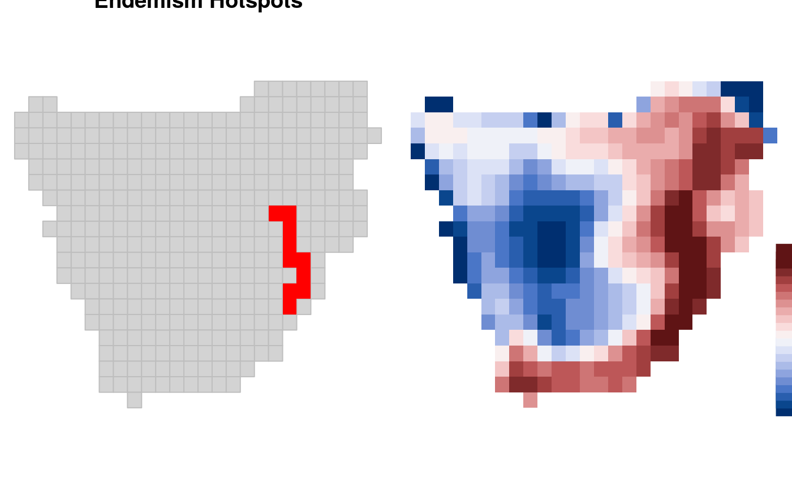

hotspots map areas or grid cells with highest values for a biodiversity metric e.g.
species richness, species endemism or degree of threat.
hotspots(x, values, prob = 2.5, ...)
| x | A data frame |
|---|---|
| values | Variable in the dataframe on which to compute hotspots analysis |
| prob | The threshold quantile for representing the highest proportion of biodiversity
in an area. By default, the threshold is set to |
| ... | Further arguments passed to or from other methods. |
Integers of 1s and 0s with 1 corresponding to the hotspots.
Myers, M., Mittermeier, R.A., Mittermeier, C.G., da Fonseca, G.A.B. & Kent, J. (2000) Biodiversity hotspots for conservation priorities. Nature 403: 853–858.
Ceballos, G. & Ehrlich, P.R. (2006) Global mammal distributions, biodiversity hotspots, and conservation. Proceedings of the National Academy of Sciences USA 103: 19374–19379.
Orme, C.D., Davies, R.G., Burgess, M., Eigenbrod, F., Pickup, N. et al. (2005) Global hotspots of species richness are not congruent with endemism or threat. Nature 436: 1016–1019.
#> [1] "comm" "polys" "phylo" "mat" "IUCN"Endm <- weighted.endemism(africa$comm) H <- hotspots(Endm, values = Endm$WE) # Merge endemism values to shapefile of grid cells. m <- merge(africa$polys, H, by="grids") m <- m[!is.na(m@data$values),] par(mfrow = c(1,2)) par(mar = rep(0, 4)) plot(africa$polys, border="grey", col="lightgrey", main="Endemism Hotspots") plot(m[(m@data$hot==1),], col="red", add=TRUE, border=NA) plot_swatch(m, m$WE, k=20, pos = "bottomright")